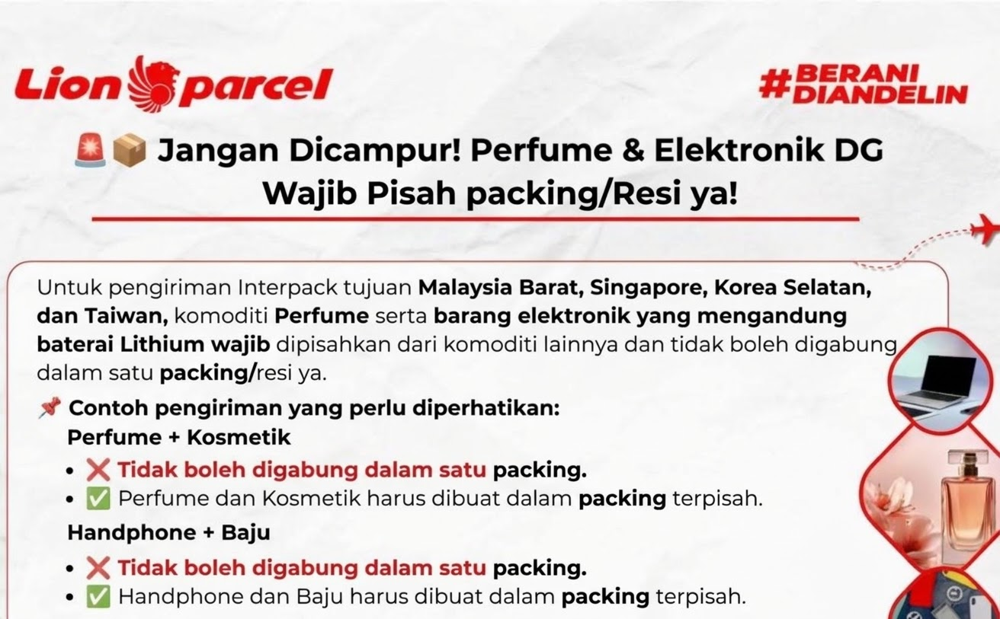

Aturan Kirim Paket Interpack Luar Negeri: Parfum dan Elektronik Wajib Pisah Packing

Pengiriman barang ke luar negeri membutuhkan perhatian khusus, terutama jika menggunakan layanan internasional melalui jalur udara. Salah satu hal yang perlu diperhatikan oleh pengirim adalah aturan pengemasan atau packing berdasarkan jenis komoditas.
Pada layanan Interpack Lion Parcel untuk tujuan Malaysia Barat, Singapura, Korea Selatan, dan Taiwan, terdapat ketentuan pemisahan packing untuk komoditas tertentu, khususnya parfum dan barang elektronik yang mengandung baterai lithium.
Karena itu, sebelum mengirim paket, pastikan barang sudah dikelompokkan sesuai ketentuan agar proses pemeriksaan dan pengiriman dapat berjalan lebih lancar.
Konsultasi Pengiriman Paket Luar Negeri
Ingin mengirim barang ke Malaysia, Singapura, Korea Selatan, atau Taiwan? Konsultasikan jenis barang dan aturan packing terlebih dahulu dengan admin Lion Parcel POS101 Rancaekek.
💬 Chat WhatsApp 0851-8309-04861. Aturan Pemisahan Parfum dan Barang Elektronik
Untuk pengiriman Interpack pada negara tujuan yang disebutkan, komoditas parfum dan barang elektronik yang mengandung baterai lithium perlu mendapatkan penanganan serta pengemasan tersendiri sesuai ketentuan layanan.
Artinya, kedua jenis barang tersebut tidak boleh sembarangan dicampur dengan komoditas lain dalam satu packing apabila ketentuan pemisahan berlaku pada pengiriman tersebut.
Contoh kasus pengiriman:
-
Parfum dan kosmetik:
- Hindari menggabungkan parfum dan kosmetik dalam satu packing.
- Siapkan packing terpisah sesuai ketentuan penerimaan barang.
-
Handphone dan pakaian:
- Handphone yang mengandung baterai lithium perlu diperiksa ketentuan pengirimannya.
- Pakaian dikemas terpisah apabila aturan pemisahan komoditas berlaku.
Catatan penting:
Tidak semua barang elektronik otomatis dapat dikirim. Perangkat dengan baterai lithium, baterai lepas, parfum, cairan, dan barang yang berpotensi masuk kategori dangerous goods harus diperiksa terlebih dahulu berdasarkan aturan Lion Parcel dan ketentuan penerbangan internasional.
2. Mengapa Parfum dan Elektronik Perlu Dipisahkan?
Pemisahan packing berkaitan dengan karakteristik masing-masing barang dan prosedur keselamatan dalam proses pengiriman. Parfum umumnya mengandung cairan dengan komposisi tertentu, sedangkan sebagian perangkat elektronik menggunakan baterai lithium yang memiliki aturan khusus dalam transportasi udara.
Pengemasan yang tidak sesuai dapat menyebabkan barang memerlukan pemeriksaan tambahan, ditolak untuk dikirim, atau mengalami keterlambatan proses pengiriman.
3. Tips Packing Sebelum Mengirim Paket Interpack
Sebelum datang ke agen Lion Parcel, ada beberapa hal yang sebaiknya dipersiapkan oleh pengirim:
- Pisahkan barang berdasarkan jenis komoditas.
- Informasikan isi paket secara jujur dan terperinci kepada petugas.
- Jangan menyembunyikan parfum, cairan, atau baterai di dalam paket.
- Pastikan barang dikemas dengan pelindung yang sesuai.
- Periksa kembali negara tujuan dan ketentuan barang yang dapat dikirim.
- Konsultasikan terlebih dahulu jika membawa barang elektronik atau produk kecantikan.
Jika Anda membawa beberapa jenis produk sekaligus, petugas dapat membantu memberikan informasi mengenai pengelompokan dan proses packing berdasarkan ketentuan layanan yang berlaku.
📍 Lokasi Lion Parcel Bandung POS101 Nanjungmekar
Jl. Raya Barat Cicalengka RT 1 RW 1, Nanjung Mekar, Rancaekek, Kabupaten Bandung, Jawa Barat.
4. Layanan Konsultasi Pengiriman Interpack di Rancaekek
Bagi masyarakat Rancaekek, Cicalengka, Nanjungmekar, dan wilayah sekitar Kabupaten Bandung yang ingin mengirim paket ke luar negeri, Lion Parcel Bandung POS101 dapat menjadi tempat untuk berkonsultasi mengenai prosedur pengiriman internasional.
Sebelum melakukan pengiriman, sampaikan jenis barang, jumlah, berat, dan negara tujuan kepada petugas. Informasi tersebut membantu proses pengecekan apakah barang dapat diterima melalui layanan Interpack serta bagaimana ketentuan packing yang harus dipenuhi.
Butuh Informasi Pengiriman ke Luar Negeri?
Hubungi Lion Parcel Bandung POS101 untuk menanyakan ketentuan pengiriman, packing, dan layanan Interpack.
💬 Hubungi Admin WhatsAppKesimpulan
Pengiriman internasional menggunakan layanan Interpack Lion Parcel memerlukan perhatian terhadap jenis komoditas dan ketentuan pengemasannya. Khusus pengiriman ke Malaysia Barat, Singapura, Korea Selatan, dan Taiwan, pemisahan packing parfum serta barang elektronik dengan baterai lithium perlu diperhatikan sesuai ketentuan layanan.
Sebelum mengirim paket, pastikan isi barang sudah diinformasikan kepada petugas dan memenuhi persyaratan pengiriman. Dengan persiapan yang tepat, proses pemeriksaan dan pengiriman diharapkan dapat berjalan lebih lancar.
Informasi Lion Parcel Bandung POS101
Nama Agen: Lion Parcel Bandung POS101 Nanjungmekar Rancaekek
Jam Operasional: Senin–Minggu, 08.00–20.00 WIB
Alamat: Jl. Raya Barat Cicalengka RT 1 RW 1, Nanjung Mekar, Rancaekek, Kabupaten Bandung
WhatsApp: 0851-8309-0486